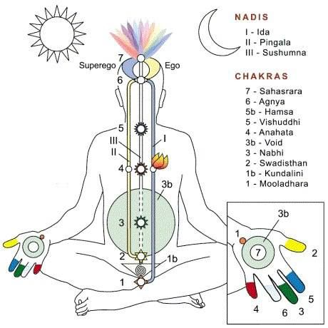
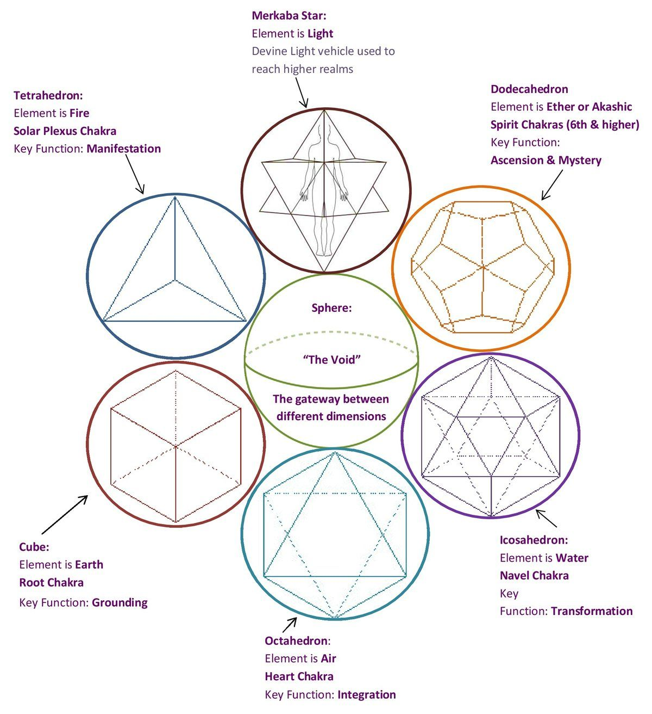

What are Chakras?
Chakras are the energy centers of the body. They are located in the astral body, along the
spine,
starting at its base and running upwards to the crown of the head. The astral body is the energy
body
residing inside our physical body. Each physical body part has a corresponding astral body part.
The
astral body cannot be seen or touched. This is also a reason why we cannot see the chakras.
The chakras radiate a specific colour and energy, and each one coincides with a gland in the
physical
body. Since each chakra relates to specific spiritual, emotional, psychological, and physical
aspects of
our being, it is believed that their blockage or malfunction can lead to physical, psychological
and
emotional disorders. The conscious awareness and balancing of these energy centers, on the other
hand,
is believed to lead to well-being and good health.
And that is one of the purposes of yoga. Through asana practice, yoga seeks to stimulate and
balance
these chakras or energy centers in the body.

What is the shape of a chakra?
There are many myths about the shape of the
chakras. Some say they are like whirling discs, while
others
believe they are like flowers hanging from the spine. Some people even think that they resemble
an
ice-cream cone! All these different ideas exist simply because the chakras cannot be seen by the
eyes or
by any device. So, we tend to believe whatever becomes commonly circulated.
The ancient scriptures say that a chakra is shaped like a sphere or a ball. And it is even
believed
that
planet earth is a major chakra of the solar system and a minor chakra of our galaxy, the Milky
Way.
It
rotates to distribute some energy, but knowing more about this remains beyond the scope of the
human
imagination.
What is the size of a chakra?
Some people say that chakras are one foot in radius, while others say that they change their
size
according to the energy flow. Scriptures, on the other hand, tell us that the chakras are
very
small, as
they are located in the astral spinal cord, which is further located inside the physical
spinal
cord.

Things you should know about Chakras
- 1. Chakras alone won’t heal you
- 2. There are more than 7 chakras
- 3. Belief is everything when it comes to chakras
- 4. Each of the 7 chakras has its own intuition
- 5. A blocked chakra is not the main cause of health problems
Chakras alone won’t heal you
Chakras work on the level of consciousness
and their effectiveness depends on the level of
consciousness which is mostly on a higher level of consciousness. The energies heal, but this is
only a short-term solution and you need to have a long-term solution to your chakra energy
problems.
You need to balance chakras, chakra healing techniques, and long term solutions as you find the
true cause of the problem with your chakra energy. A higher level of consciousness will enable
you to see a possible problem before it even reaches your energy centers which will then help
you find an effective solution.
There are more than 7 chakras
To determine the right system, you first need to understand that chakras aren’t like organs in
the physical body. Contrary to what many think, there are more than seven chakras, though the
seven are the most common. The seven chakras in the human energy body are represented by seven
colors and have a name and meaning. But, there are also other systems associated with how human
energy body works.
Belief is everything when it comes to chakras
Believing in everything, even that which you cannot see is very important. This is the same when
it comes to chakras. Because most people can’t see chakras they do not believe in them. The
chakra system explains more about energy flows in the human body that exist on the higher levels
of consciousness and you need to first believe that they exist for you to see and feel them.
Once your consciousness is high enough you will be able to notice their existence.
Each of the 7 chakras has its own intuition
Chakras are energy routers that connect you to a larger energy network. For you to make good use
of your chakras and your intuition you need to establish the communication with each energy
center of your body. With proper intuition towards understanding each individual chakra, you
will be able to create your own visualization techniques that would help you hear what your
chakras are trying to tell you as well as use them to your advantage.
A blocked chakra is not the main cause of health problems
Though blocked chakras have an effect on your health they aren’t always the major cause of your
health issues. Blocked chakras are caused when there is no energy flow on the higher levels of
consciousness.
Even with the presence of these chakras, in case one of your chakras is either too open or too
closed, then this has a negative impact on your health. Learn more about the 7 chakras and tune
in with the natural energy cycles of your body. This information will help you to connect all
the physical, emotional and spiritual imbalances with the chakras that empower them and enable
you to balance your chakras and live a healthy and harmonious life.